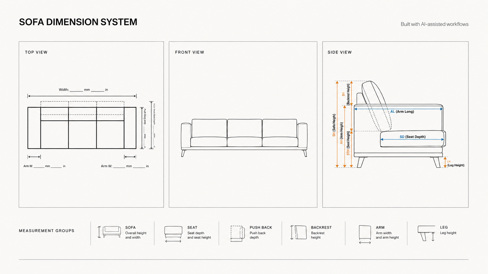
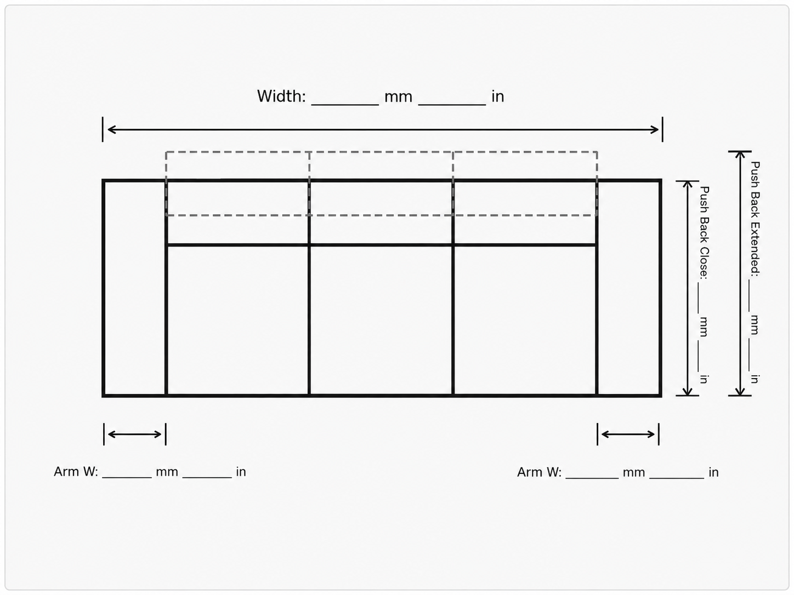
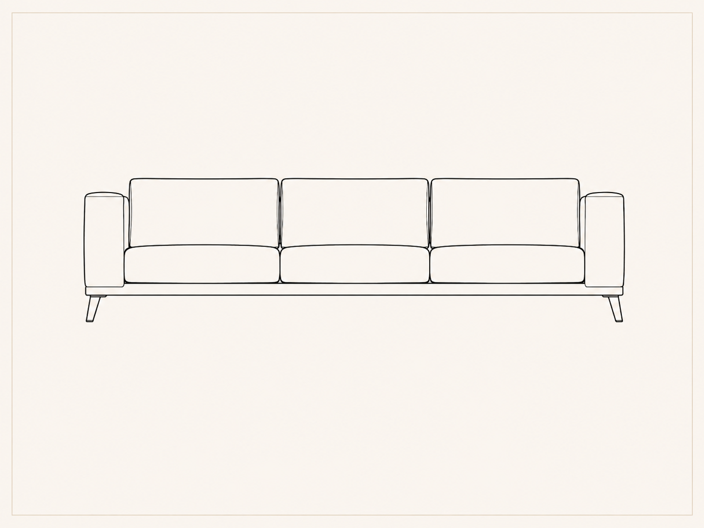
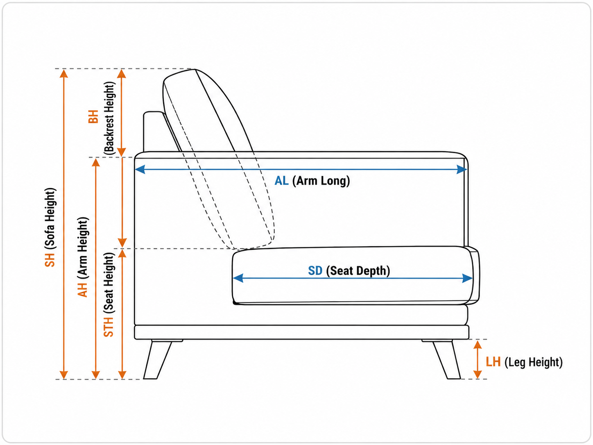
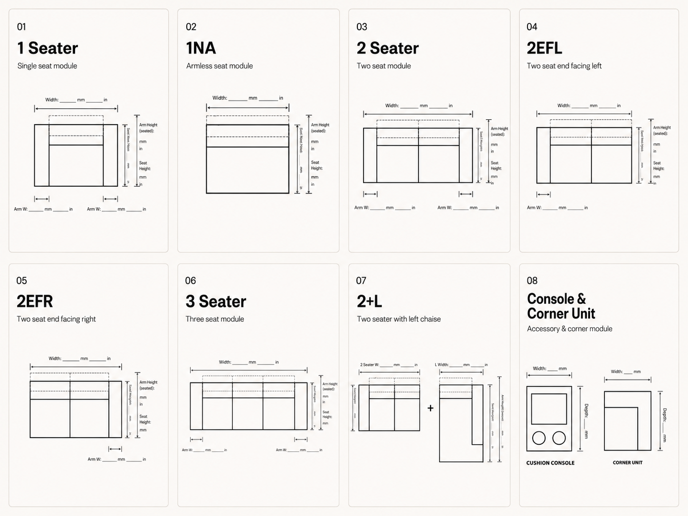
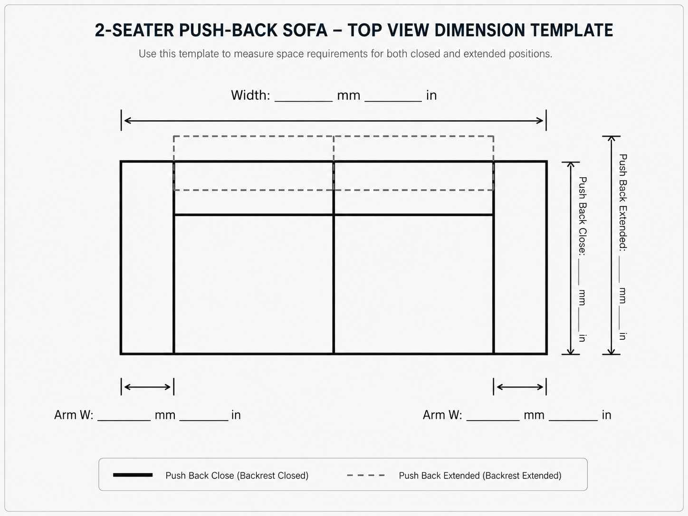

Sofa
Overall height
Overall width
STANDARDIZATION / DOCUMENTATION
Built with AI-assisted workflows
A standardized sofa dimension template system designed to make measurements clearer, more consistent, and reusable across new sofa models.
The company did not have a standardized dimension template. Sofa measurements were usually drawn manually, which often resulted in incomplete or inaccurate dimension data, inconsistent drawings, and diagrams that were difficult for non-technical people to understand.
This also affected catalogue preparation. When a new sofa sample was prepared for photography, inaccurate dimensions could lead to incorrect catalogue information, customer confusion, and possible disputes later.
I developed a reusable sofa dimension template system to standardize how new sofa models are documented.
A single reference aligns the required views with the measurement groups used across documentation.

Three consistent viewpoints separate width, profile, and construction information for easier reading.



The same documentation logic scales from an armchair to modular combinations and corner units.

Measurements are grouped by physical component so required information can be checked systematically.
Overall height
Overall width
Seat depth
Seat height
Closed depth
Extended depth
Backrest height
Arm width
Arm height
Leg height
The template documents space requirements for both states without creating a separate drawing or losing the relationship between them.

From individually drawn information to a repeatable documentation workflow.
Identify where manual drawings produced incomplete, inconsistent, or hard-to-read information.
Establish top, front, and side views as the shared visual basis for every model.
Organize key dimensions around sofa, seat, push back, backrest, arm, and leg components.
Create a structure that adapts to future sofa configurations instead of redrawing each model from scratch.
One template.
Less repeated work.
Clearer decisions.
New sofa designs can now use the same template, saving time, reducing repeated work, and producing more complete and consistent dimension documentation for costing, catalogue preparation, and internal reference.